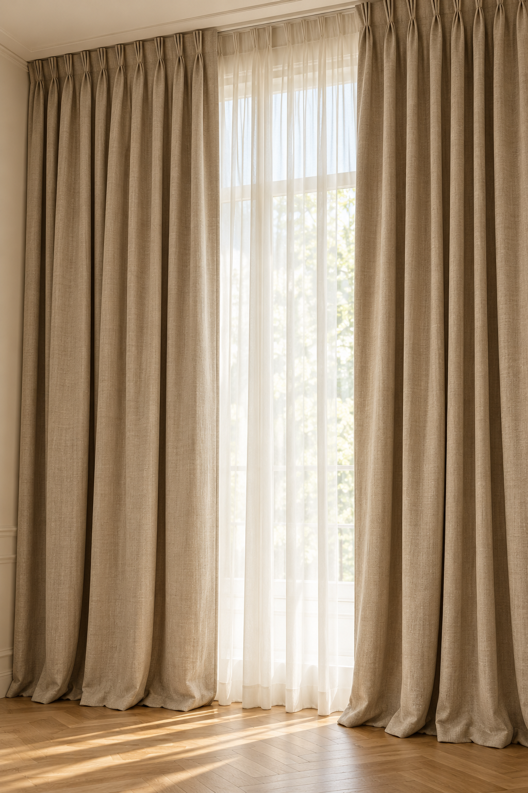
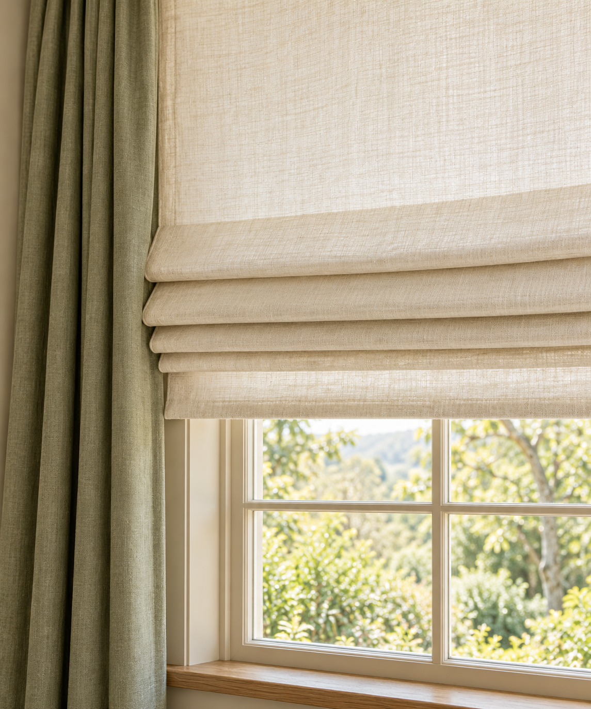
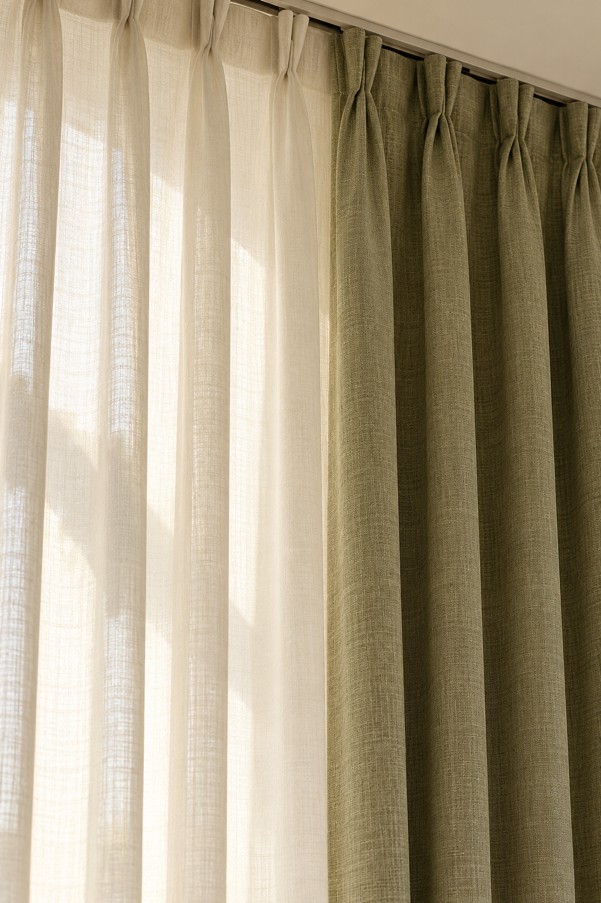

Портьеры и тюль
Воздушные ткани, выразительные портьеры и многослойные сочетания. Выбираем фактуру и степень затемнения.
Подобрать сочетание ↗Шторы на заказ, которые становятся частью интерьера. От первого прикосновения к ткани до последней складки у вашего окна.
Записаться на замер ↗
ДОМ НАЧИНАЕТСЯ С ОЩУЩЕНИЯУчитываем свет, пропорции комнаты и привычный ритм жизни. Находим текстильное решение, которое подходит именно вам.
Воздушные ткани, выразительные портьеры и многослойные сочетания. Выбираем фактуру и степень затемнения.
Подобрать сочетание ↗Лаконичное оформление для кухни, кабинета или спальни. Аккуратные складки и удобное управление светом.
Обсудить решение ↗Подушки, покрывала и текстильные акценты. Собираем оттенки и фактуры в единую историю вашего интерьера.
Продумать детали ↗Натуральные оттенки, тактильные фактуры и свет. Выберите модель и стиль для вашего интерьера.
Выразительные складки · длина до пола

Ровные складки · лаконичный силуэт

Швы · фактура ткани · оформление верха
Рассмотрите, как штора держится на карнизе. Нажмите на изображение, чтобы увеличить верх и детали крепления.
Металлические кольца в полотне надеваются на круглый карниз. На изображении видны кольца и штанга.
Петли из ткани обхватывают круглый карниз. Видны верх полотна, петли и крепление штанги.
Вид со стороны комнаты: ровные складки и профильный карниз. Шторная лента и крючки скрыты за полотном.
Цвет на экране может отличаться от ткани. Изображения — ИИ-визуализации вариантов крепления; конкретные детали и совместимость с карнизом согласуем перед пошивом.
Выберите сочетание, которое хотите обсудить с мастером.
Сравните варианты и отметьте то, что вам нравится. Возможность пошива и детали обсудим на консультации.
Спокойные оттенки, прямые линии, матовые ткани и минимум декора.
Это пожелание для обсуждения. Ткань, крепление и детали согласуем с мастером.
Визуализации моделей штор, созданные с помощью ИИ. Не являются фотографиями выполненных заказов ателье.
Обсуждаем помещение, пожелания, ориентир по бюджету и подходящий формат работы.
Согласуем ткань, цвет, модель и размеры. Рассчитываем стоимость до начала пошива.
Работаем по согласованному эскизу. Уделяем внимание швам, пропорциям и посадке ткани.
Согласуем передачу заказа и необходимые работы по навеске. Подсказываем, как ухаживать за текстилем.
Для первого разговора пригодятся фотографии комнаты, примерные размеры окна и несколько идей, которые вам нравятся.
Химки, ул. 9 Мая, 12Б
Цокольный этаж. Время визита согласуйте по телефону.
Ваш выбор: портьеры · современный стиль
Позвоните в ателье: обсудим задачу и согласуем удобное время. Подготовьте примерные размеры окна и пожелания по ткани.
Записаться на замер ↗+7 982 481-99-82Кнопка откроет звонок. Запись подтверждается при разговоре с ателье.
Посмотреть адрес на карте ↗